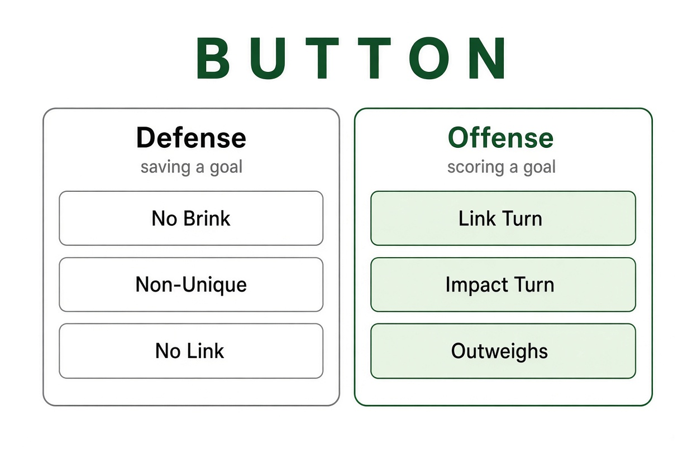

Chapter 18: Refutation in Full
In this chapter
Move: Answer. Builds on: Chapters 4 and 14. Where you use it: answering any argument built on cause and effect, which in policy debate means nearly every argument.
Objectives
By the end of this chapter you should be able to:
- Distinguish offensive from defensive arguments and explain why you need both.
- Use all six B.U.T.T.O.N. responses against an advantage or disadvantage.
- Avoid the double turn.
- Use three more responses: alternative causes, sequencing and no uniqueness.
- Derive responses to any argument from the expression "doing X will cause Y."
Key terms
Refutation, offense, defense, no brink, non-unique, link turn, impact turn, outweighs, no link, double turn, alternative causes, root cause, no uniqueness, algebraic analysis, inevitability, impact defense.
The idea
18.1 Offense and defense
Refutation is the process of responding to arguments. Chapter 4 gave you its basic shape: four-step refutation and the significance, relevance and accuracy tests. This chapter gives you a complete set of responses for arguments built on cause and effect, which in policy debate means almost all of them.
Every response falls into one of two kinds. A defensive argument says your opponent does not win: their argument is wrong, weak or irrelevant. In soccer terms, defense is saving a goal. An offensive argument says you win: their argument actually supports your side, or your argument matters more. Offense is scoring a goal.
The difference matters because of the Scale. Defense removes weight from your opponent's side; offense adds weight to yours. A debater with only defense can, at best, reduce an opponent's argument to zero, and judges often hesitate to say any argument has a zero chance of being true. A debater with offense has a reason for the judge to vote for them even if some of the opponent's argument survives. Strong answers usually combine both: a little defense to shrink the argument, and some offense to turn the leftover risk your way.
18.2 B.U.T.T.O.N.
B.U.T.T.O.N. is a memory aid for six responses to any advantage or disadvantage. It may be the second-worst acronym in the world; it is also one of the most useful. Each response attacks a different part of the Uniqueness Model.

No brink (defense) argues that the change is too small to trigger the impact, or the status quo is too far from the impact for the change to matter. "If we all recycle, we can solve climate change" invites a no-brink answer: recycling is real but far too small a change to stop climate change on its own. No brink attacks the internal link, and it is especially strong against advantages that claim a modest plan will prevent a huge catastrophe.
Non-unique (defense) argues that the impact is already happening in the status quo. "If we pass your plan, it will increase inflation" invites a non-unique answer if inflation is already high: the plan cannot cause what is already here. Chapter 14 explained why this works: an impact that happens in both worlds cancels on the Scale. Non-unique attacks the uniqueness.
Link turn (offense) argues that the link actually goes the other direction: the plan prevents the impact instead of causing it. "Dropping out of college will save me tens of thousands on tuition" can be link turned: dropping out costs far more over a lifetime in lost earnings. A link turn takes your opponent's impact and makes it your impact.
Impact turn (offense) argues that the impact is actually the opposite of what your opponent says: their good thing is bad, or their bad thing is good. "Democracy is good because it promotes peace" can be impact turned by arguing that democracy is bad: it needs consensus to act, so it is often too slow to solve major problems. Impact turns are powerful and risky, because you are defending a claim that sounds wrong. Use them only with strong evidence, and never on impacts like human suffering, where the turn is indefensible.
Outweighs (offense) concedes that your opponent's argument may be true and argues that your impact matters more. "The housing crisis is a big deal, but if we build low-income housing, my property value might go down a little" invites an outweighs answer: people having homes matters more than a small drop in property value. Outweighs uses the impact calculus from Chapter 10.
No link (defense) argues that the plan does not cause what your opponent claims. "If you step on a crack, you'll break your mother's back" deserves a no-link answer: there is no evidence that stepping on cracks causes spinal injury. No link attacks the link itself, and it is usually the first response debaters learn, because it simply says "that's not what happens."
At a glance
| Response | Type | What it says | Attacks |
|---|---|---|---|
| No brink | Defense | The change is too small, or the impact too far away | Internal link |
| Non-unique | Defense | The impact is already happening | Uniqueness |
| Link turn | Offense | The plan prevents the impact instead | Link |
| Impact turn | Offense | The impact is actually good, or actually bad | Impact |
| Outweighs | Offense | Our impact matters more | Weighing |
| No link | Defense | The plan does not cause the impact | Link |
18.3 The double turn
There is one combination you must never make. A double turn happens when you link turn and impact turn the same argument. Suppose the negative says the plan causes an economic slowdown, and slowdowns are bad. If the affirmative says the plan actually speeds up the economy (link turn) and also that slowdowns are actually good (impact turn), it has argued that the plan speeds up the economy and that speeding up the economy is bad. It has turned the argument twice and handed the negative a new disadvantage. Pick one turn per argument, and make sure your other answers do not contradict it.
18.4 Three more responses
Three responses fall outside the acronym but come up constantly.
Alternative causes (defense) argues that other things will cause the impact regardless of the plan. If the negative says the plan will push families into poverty, the affirmative can point to other forces already doing so. Alternative causes shrink the plan's importance: if many things cause the impact, the plan's contribution is small.
Root cause, or sequencing (offense), argues that your impact comes first because it causes your opponent's. Chapter 10 introduced sequencing as a weighing tool; here it works as a response: "Their impact is a symptom. Ours is the cause, so solving ours solves theirs too."
No uniqueness (defense) is different from non-unique. It argues that your opponent never established the direction of the status quo at all: they read no uniqueness evidence, so the judge cannot know whether the impact is coming anyway. It is a simple, effective answer to disadvantages read without uniqueness.
18.5 The algebra
Acronyms have to be memorized, and students sometimes struggle to pick the right letter under pressure. This book's author teaches another approach, called algebraic analysis. It derives every response from one expression, with no jargon required.
Almost every policy argument says: doing X will cause Y, where X is the plan (the link) and Y is the impact. Call any competing impact Z. Every response is a statement about X, Y or Z.
At the beginner level, four statements cover the basics.
- "X will not cause Y." That is a no link.
- "X will make Y less likely, not more" (or more likely, not less). That is a link turn.
- "Y is already happening." That is non-unique.
- "Z matters more than Y." That is outweighs.
At the intermediate level, four more statements add depth.
- "Y will happen whether or not X happens." That is an inevitability claim: the impact cannot be prevented, so it should not count for either side.
- "Other things will cause Y." That is alternative causes.
- "We are so far from Y that X is too small to cause it." That is no brink.
- "Y doesn't matter that much." That is impact defense: the impact is real but smaller, rarer or more recoverable than claimed.
The advantage of the algebra is that it works even when you have forgotten every name. Faced with any argument, write it as "doing X will cause Y," and then ask questions about each letter. Does X really cause Y? Is Y already happening? Would Y happen anyway? What else causes Y? Does Y matter? Is there a Z that matters more? Every question is a possible answer. More advanced levels add responses such as arguing the link has already been tested (if X caused Y, it would have happened already) and sequencing (Y determines whether Z happens).
Say it
- No brink: "The plan is too small to trigger this."
- Non-unique: "This is already happening, so the plan can't be the cause."
- Link turn: "The plan actually prevents this, because..."
- Impact turn: "This impact is actually good, because..."
- Outweighs: "Even if it's true, our impact matters more, because..."
- No link: "The plan doesn't cause this. Their evidence is about..."
- Algebra: "Their argument is that doing X causes Y. X doesn't cause Y, and Y is already happening."
Worked examples
A personal decision
Resolution: Students who are undecided about a major should start at a community college.
The negative's disadvantage: starting at a community college delays graduation, costing a year of salary. Written as algebra: doing X (starting at a community college) causes Y (delayed graduation). The affirmative's answers come straight from the expression. No link: with a transfer guarantee, credits carry over, so X does not cause Y. Non-unique: undecided students at four-year schools often take extra terms too, so Y is already happening. Outweighs: the tuition savings (Z) are larger than the lost salary. The affirmative avoids an impact turn, because arguing that a delayed graduation is good would be hard to defend, and it never needs one.
A national policy question
Resolution: The United States federal government should substantially restrict the development of artificial intelligence.
The negative reads the AI leadership disadvantage from Chapter 17. The affirmative answers with B.U.T.T.O.N. Non-unique: its evidence says other countries are already closing the gap. No link: the license applies only to the largest systems, so most American development continues. Link turn: safe, licensed systems will be trusted more by businesses and allies, strengthening American leadership. And outweighs: even if some leadership is lost, preventing a catastrophic AI failure matters more. Notice the combination. The defense shrinks the disadvantage, the link turn gives the affirmative offense on it, and the outweighs claim covers whatever risk is left. Notice also what the affirmative does not do: it does not argue that American AI leadership is bad, which would be an impact turn on top of a link turn, a double turn.
How a judge weighs it
Judges look at what is left of an argument after the responses. Defense reduces the risk; offense gives the answering side a reason to vote for it. A judge facing an argument answered only with defense may still give it some small risk. A judge facing a won link turn treats the argument as a reason to vote for the side that turned it. Judges also catch double turns and contradictions, and they will hold them against the debater who made them.
Common mistakes
- Only playing defense. Get offense on the important arguments.
- Double turning. Never link turn and impact turn the same argument.
- Impact turning the indefensible. Some impacts cannot credibly be argued good.
- Confusing non-unique and no uniqueness. One says the impact is already happening; the other says they never proved the direction.
- Listing labels without warrants. "Non-unique" is a label. Say why the impact is already happening, with evidence.
Practice
Drill: press the button (15 minutes, small groups). Your instructor reads short arguments aloud. Groups race to name the best B.U.T.T.O.N. response and explain it in one sentence. Points only for a correct response with a reason.
Drill: solve for X (15 minutes, pairs). Write an argument from the news as "doing X will cause Y." Generate as many responses as you can using the beginner and intermediate statements. Mark each as offense or defense.
Writing exercise. Write a complete answer to a disadvantage against the AI licensing plan, using at least two defensive responses and one offensive response. Check that your offense does not create a double turn.
Check questions
Choose an answer to see feedback. Nothing is recorded.
1. What is the difference between offense and defense?
2. "Inflation is already at record highs, so the plan can't be what causes it." Which response is this?
3. An affirmative argues the plan speeds up the economy and also that economic growth is bad. What has it done?
4. Using the algebra, "Y is already happening" translates to which response?
5. How is "no uniqueness" different from "non-unique"?